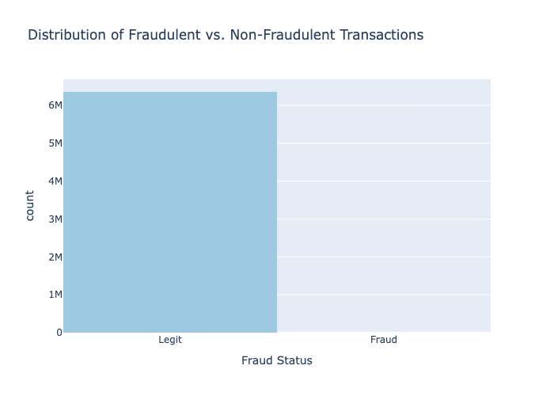

Aryan Kaushik
Data Scientist with expertise in fraud analytics, ML, and data engineering. Open to new opportunities.
Download Resume (PDF)View LinkedIn
🧑💻 Projects

Credit Card Fraud Detection
End-to-end ML pipeline with feature engineering, model explainability, and business recommendations.
Tools: Python, LightGBM, SHAP, Plotly, sklearn, Spark, GANs.
View Project
Tools: Python, LightGBM, SHAP, Plotly, sklearn, Spark, GANs.
📈 Experience Timeline
2022–2024: Data Scientist, Deduce Inc. (acquired by CHEQ)
Led or collaborated on all POV analyses, integrating proprietary data with client datasets, engineering hundreds of features, and applying ML models using Python and Spark to mitigate fraud risks and reduce friction. Built reusable Python/Spark pipelines and client-facing dashboards.
Led or collaborated on all POV analyses, integrating proprietary data with client datasets, engineering hundreds of features, and applying ML models using Python and Spark to mitigate fraud risks and reduce friction. Built reusable Python/Spark pipelines and client-facing dashboards.
2021–2022: Senior Data Analyst, Top Hat Monocle
Guided marketing/product strategy with student engagement data, cohort/retention analysis, predictive models, and automated reporting in AWS, Looker, QuickSight.
Guided marketing/product strategy with student engagement data, cohort/retention analysis, predictive models, and automated reporting in AWS, Looker, QuickSight.
2019–2021: Senior Data Analyst, Initiative Inc.
Campaign analytics, A/B tests, and real-time dashboards for digital media clients. Designed experiment frameworks, blended SQL/Python/Azure data, and delivered deep-dive post-campaign insights.
Campaign analytics, A/B tests, and real-time dashboards for digital media clients. Designed experiment frameworks, blended SQL/Python/Azure data, and delivered deep-dive post-campaign insights.
2017–2018: Senior Data Analyst, Aimia (Aeroplan)
Loyalty data modeling in R/SQL/Tableau. Built churn and CLV models, automated reporting, and drove segmentation-based campaigns for engagement and retention.
Loyalty data modeling in R/SQL/Tableau. Built churn and CLV models, automated reporting, and drove segmentation-based campaigns for engagement and retention.
2017: Data Analyst, Sears Canada
E-commerce analytics, ML-based recommendations, and campaign reporting. Built A/B test frameworks, produced live Tableau dashboards, and analyzed Redshift/Google Analytics data.
E-commerce analytics, ML-based recommendations, and campaign reporting. Built A/B test frameworks, produced live Tableau dashboards, and analyzed Redshift/Google Analytics data.
2014–2016: Expense Analyst, Magna International
Streamlined reconciliation and trend analysis for 60+ divisions using SQL, MS Access, Excel, and business process automation.
Streamlined reconciliation and trend analysis for 60+ divisions using SQL, MS Access, Excel, and business process automation.
📬 Contact Me
Let's connect for opportunities, freelance projects, or just to geek out about data!